Last updated: 2020-09-17
Checks: 6 1
Knit directory: RILEY_Hons/
This reproducible R Markdown analysis was created with workflowr (version 1.6.2). The Checks tab describes the reproducibility checks that were applied when the results were created. The Past versions tab lists the development history.
The R Markdown file has unstaged changes. To know which version of the R Markdown file created these results, you’ll want to first commit it to the Git repo. If you’re still working on the analysis, you can ignore this warning. When you’re finished, you can run wflow_publish to commit the R Markdown file and build the HTML.
Great job! The global environment was empty. Objects defined in the global environment can affect the analysis in your R Markdown file in unknown ways. For reproduciblity it’s best to always run the code in an empty environment.
The command set.seed(20200903) was run prior to running the code in the R Markdown file. Setting a seed ensures that any results that rely on randomness, e.g. subsampling or permutations, are reproducible.
Great job! Recording the operating system, R version, and package versions is critical for reproducibility.
Nice! There were no cached chunks for this analysis, so you can be confident that you successfully produced the results during this run.
Great job! Using relative paths to the files within your workflowr project makes it easier to run your code on other machines.
Great! You are using Git for version control. Tracking code development and connecting the code version to the results is critical for reproducibility.
The results in this page were generated with repository version 8e2eeca. See the Past versions tab to see a history of the changes made to the R Markdown and HTML files.
Note that you need to be careful to ensure that all relevant files for the analysis have been committed to Git prior to generating the results (you can use wflow_publish or wflow_git_commit). workflowr only checks the R Markdown file, but you know if there are other scripts or data files that it depends on. Below is the status of the Git repository when the results were generated:
Ignored files:
Ignored: .DS_Store
Ignored: .Rhistory
Ignored: .Rproj.user/
Ignored: Amy_childadult_raw_data/
Ignored: analysis/10_brow_analysis_cache/
Ignored: analysis/9_cheek_analysis_cache/
Ignored: analysis/emomodelnobins.png
Ignored: analysis/emomodelnobinsbrow.png
Ignored: analysis/emotionbymodel.png
Ignored: analysis/emotionbymodelbrow.png
Ignored: analysis/emoxmodelFS.png
Ignored: analysis/emoxmodelFSbrow.png
Ignored: analysis/emoxmodelHA.png
Ignored: analysis/emoxmodelHAbrow.png
Ignored: analysis/figure/
Ignored: analysis/just messing around/
Ignored: analysis/modelbyemotion.png
Ignored: analysis/working/
Ignored: data/adultsfaces/
Ignored: data/childfaces/
Ignored: data/clean_data/
Ignored: data/missing_values/
Ignored: data/testdata/
Unstaged changes:
Modified: analysis/adult_child_plot_analyses.Rmd
Modified: emomodelnobins.png
Modified: emomodelnobinsbrow.png
Modified: emotionbymodel.png
Modified: emotionbymodelbrow.png
Modified: emoxmodelFS.png
Modified: emoxmodelFSbrow.png
Modified: emoxmodelHA.png
Modified: emoxmodelHAbrow.png
Note that any generated files, e.g. HTML, png, CSS, etc., are not included in this status report because it is ok for generated content to have uncommitted changes.
These are the previous versions of the repository in which changes were made to the R Markdown (analysis/adult_child_plot_analyses.Rmd) and HTML (docs/adult_child_plot_analyses.html) files. If you’ve configured a remote Git repository (see ?wflow_git_remote), click on the hyperlinks in the table below to view the files as they were in that past version.
| File | Version | Author | Date | Message |
|---|---|---|---|---|
| Rmd | 8e2eeca | RileyFerguson | 2020-09-17 | Riley fixing plots |
| html | 8e2eeca | RileyFerguson | 2020-09-17 | Riley fixing plots |
| Rmd | 8a1b067 | RileyFerguson | 2020-09-16 | updating analyses |
| html | 8a1b067 | RileyFerguson | 2020-09-16 | updating analyses |
| Rmd | e7fcdcf | Your Name | 2020-09-16 | jenny model emotion plots |
| Rmd | 930b045 | RileyFerguson | 2020-09-16 | Riley adding analyses |
| html | 930b045 | RileyFerguson | 2020-09-16 | Riley adding analyses |
library(tidyverse)
library(here)
library(lme4)
library(lmerTest)
library(broom.mixed)
library(pixiedust)
library(beepr)
library(ggplot2)
library(ggeasy)
library(dplyr)
library(papaja)Goal here is to work out whether it is possible to compare responses to child and adult faces i.e. to include model in the model.
df <- read_csv(here::here("data", "adult_child_combined", "zdiff_binscreened2.csv"))Parsed with column specification:
cols(
pp_no = col_character(),
model = col_character(),
emotion = col_double(),
trial = col_character(),
muscle = col_character(),
bin = col_character(),
zdiff = col_double(),
emo = col_character()
)add log modulus
df <- df %>% mutate_if(is.character, as.factor) %>%
mutate(log_modulus = sign(zdiff) * log(1+abs(zdiff)))
glimpse(df)Rows: 61,480
Columns: 9
$ pp_no <fct> pp401, pp401, pp401, pp401, pp401, pp401, pp401, pp4…
$ model <fct> adult, adult, adult, adult, adult, adult, adult, adu…
$ emotion <dbl> 131, 131, 131, 131, 131, 131, 131, 131, 131, 131, 13…
$ trial <fct> trial1, trial1, trial1, trial1, trial1, trial1, tria…
$ muscle <fct> brow, brow, brow, brow, brow, brow, brow, brow, brow…
$ bin <fct> diff_bin1, diff_bin10, diff_bin2, diff_bin3, diff_bi…
$ zdiff <dbl> 0.133992486, -0.672344142, 0.034300886, -0.126145600…
$ emo <fct> happy, happy, happy, happy, happy, happy, happy, hap…
$ log_modulus <dbl> 0.125744579, -0.514226320, 0.033725726, -0.118800829…cheek
cheek_data <- df %>%
filter(emo %in% c("happy", "angry","fear", "sad")) %>%
filter(muscle == "cheek") %>%
arrange(pp_no, model, trial, bin)
cheek_data$emo <- fct_relevel(cheek_data$emo, c("happy", "angry", "fear", "sad"))
cheek_data$bin <- fct_relevel(cheek_data$bin, c("diff_bin1", "diff_bin2", "diff_bin3", "diff_bin4", "diff_bin5", "diff_bin6", "diff_bin7", "diff_bin8", "diff_bin9", "diff_bin10"))
levels(cheek_data$bin) [1] "diff_bin1" "diff_bin2" "diff_bin3" "diff_bin4" "diff_bin5"
[6] "diff_bin6" "diff_bin7" "diff_bin8" "diff_bin9" "diff_bin10"naniar::vis_miss(cheek_data)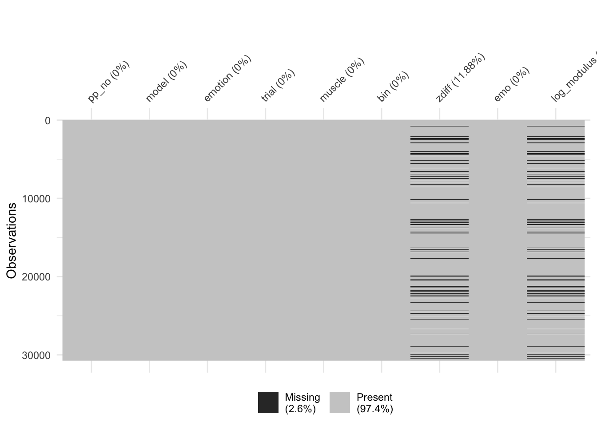
| Version | Author | Date |
|---|---|---|
| 8a1b067 | RileyFerguson | 2020-09-16 |
add “model” to best fit from 9_cheek_analysis
This model adds model to best fit model (including slopes for emo)
adult_cheek_lm_2 <- lmer(log_modulus ~ emo + bin + emo*bin + (1 + emo|pp_no) , data = HA_adult_cheek, REML = FALSE)
cheek_lm_1 <- lmer(log_modulus ~ emo + bin + model +
emo*bin + bin*model +
emo*bin*model +
(1 + emo|pp_no) ,
data = cheek_data, REML = FALSE)
beepr::beep()cheek_lm_2 <- lmer(log_modulus ~ emo + bin + model +
emo*bin + bin*model +
emo*bin*model +
(1|pp_no) ,
data = cheek_data, REML = FALSE)
beepr::beep()Model with slope (cheek_lm_1 AIC = 27557) does better than model without (cheek_lm_1 AIC = 28261).
AIC(cheek_lm_1)[1] 27557.44AIC(cheek_lm_2)[1] 28261.63anova(cheek_lm_1, cheek_lm_2)Data: cheek_data
Models:
cheek_lm_2: log_modulus ~ emo + bin + model + emo * bin + bin * model + emo *
cheek_lm_2: bin * model + (1 | pp_no)
cheek_lm_1: log_modulus ~ emo + bin + model + emo * bin + bin * model + emo *
cheek_lm_1: bin * model + (1 + emo | pp_no)
Df AIC BIC logLik deviance Chisq Chi Df Pr(>Chisq)
cheek_lm_2 82 28262 28935 -14049 28098
cheek_lm_1 91 27557 28304 -13688 27375 722.19 9 < 2.2e-16 ***
---
Signif. codes: 0 '***' 0.001 '**' 0.01 '*' 0.05 '.' 0.1 ' ' 1summary(cheek_lm_1)Linear mixed model fit by maximum likelihood . t-tests use
Satterthwaite's method [lmerModLmerTest]
Formula:
log_modulus ~ emo + bin + model + emo * bin + bin * model + emo *
bin * model + (1 + emo | pp_no)
Data: cheek_data
AIC BIC logLik deviance df.resid
27557.4 28304.3 -13687.7 27375.4 26996
Scaled residuals:
Min 1Q Median 3Q Max
-4.2052 -0.4465 -0.0413 0.3537 6.9088
Random effects:
Groups Name Variance Std.Dev. Corr
pp_no (Intercept) 0.01679 0.1296
emoangry 0.01928 0.1388 -0.77
emofear 0.02576 0.1605 -0.89 0.79
emosad 0.01885 0.1373 -0.86 0.70 0.77
Residual 0.15849 0.3981
Number of obs: 27087, groups: pp_no, 50
Fixed effects:
Estimate Std. Error df t value
(Intercept) -2.336e-02 2.847e-02 2.537e+02 -0.820
emoangry 8.924e-03 3.656e-02 4.720e+02 0.244
emofear -2.788e-02 3.813e-02 3.329e+02 -0.731
emosad -1.180e-02 3.630e-02 4.784e+02 -0.325
bindiff_bin2 -3.190e-02 3.045e-02 2.689e+04 -1.047
bindiff_bin3 -2.954e-02 3.050e-02 2.689e+04 -0.969
bindiff_bin4 1.635e-02 3.052e-02 2.689e+04 0.536
bindiff_bin5 1.706e-02 3.059e-02 2.689e+04 0.558
bindiff_bin6 3.387e-02 3.059e-02 2.689e+04 1.107
bindiff_bin7 5.770e-02 3.046e-02 2.689e+04 1.895
bindiff_bin8 7.893e-02 3.068e-02 2.689e+04 2.573
bindiff_bin9 1.033e-01 3.070e-02 2.689e+04 3.366
bindiff_bin10 8.942e-02 3.093e-02 2.689e+04 2.891
modelchild -3.652e-02 3.090e-02 2.689e+04 -1.182
emoangry:bindiff_bin2 3.144e-03 4.327e-02 2.689e+04 0.073
emofear:bindiff_bin2 4.789e-02 4.296e-02 2.689e+04 1.115
emosad:bindiff_bin2 2.575e-02 4.311e-02 2.689e+04 0.597
emoangry:bindiff_bin3 5.368e-03 4.322e-02 2.689e+04 0.124
emofear:bindiff_bin3 6.790e-02 4.303e-02 2.689e+04 1.578
emosad:bindiff_bin3 1.085e-02 4.302e-02 2.689e+04 0.252
emoangry:bindiff_bin4 -4.813e-02 4.318e-02 2.689e+04 -1.115
emofear:bindiff_bin4 1.865e-02 4.308e-02 2.689e+04 0.433
emosad:bindiff_bin4 -4.376e-02 4.305e-02 2.689e+04 -1.017
emoangry:bindiff_bin5 -3.683e-02 4.327e-02 2.689e+04 -0.851
emofear:bindiff_bin5 2.386e-02 4.305e-02 2.689e+04 0.554
emosad:bindiff_bin5 -1.564e-02 4.321e-02 2.689e+04 -0.362
emoangry:bindiff_bin6 -6.321e-02 4.329e-02 2.689e+04 -1.460
emofear:bindiff_bin6 -9.290e-03 4.302e-02 2.689e+04 -0.216
emosad:bindiff_bin6 -2.981e-02 4.321e-02 2.689e+04 -0.690
emoangry:bindiff_bin7 -5.304e-02 4.313e-02 2.689e+04 -1.230
emofear:bindiff_bin7 -1.184e-02 4.297e-02 2.689e+04 -0.275
emosad:bindiff_bin7 -6.420e-02 4.300e-02 2.689e+04 -1.493
emoangry:bindiff_bin8 -6.893e-02 4.348e-02 2.689e+04 -1.585
emofear:bindiff_bin8 -4.727e-02 4.322e-02 2.689e+04 -1.094
emosad:bindiff_bin8 -6.996e-02 4.327e-02 2.689e+04 -1.617
emoangry:bindiff_bin9 -8.945e-02 4.343e-02 2.689e+04 -2.060
emofear:bindiff_bin9 -2.578e-02 4.317e-02 2.689e+04 -0.597
emosad:bindiff_bin9 -7.681e-02 4.330e-02 2.689e+04 -1.774
emoangry:bindiff_bin10 -1.094e-01 4.364e-02 2.689e+04 -2.507
emofear:bindiff_bin10 -3.670e-02 4.367e-02 2.689e+04 -0.840
emosad:bindiff_bin10 -4.974e-02 4.361e-02 2.689e+04 -1.141
bindiff_bin2:modelchild 1.104e-02 4.329e-02 2.689e+04 0.255
bindiff_bin3:modelchild 2.200e-02 4.329e-02 2.689e+04 0.508
bindiff_bin4:modelchild -2.472e-02 4.335e-02 2.689e+04 -0.570
bindiff_bin5:modelchild 2.085e-03 4.335e-02 2.689e+04 0.048
bindiff_bin6:modelchild 4.573e-03 4.338e-02 2.689e+04 0.105
bindiff_bin7:modelchild -1.402e-02 4.321e-02 2.689e+04 -0.324
bindiff_bin8:modelchild -3.023e-02 4.349e-02 2.689e+04 -0.695
bindiff_bin9:modelchild -4.183e-02 4.363e-02 2.689e+04 -0.959
bindiff_bin10:modelchild -4.039e-02 4.383e-02 2.689e+04 -0.922
emoangry:modelchild 9.843e-03 4.379e-02 2.690e+04 0.225
emofear:modelchild 3.779e-02 4.381e-02 2.690e+04 0.863
emosad:modelchild 1.507e-02 4.366e-02 2.690e+04 0.345
emoangry:bindiff_bin2:modelchild 1.338e-02 6.143e-02 2.689e+04 0.218
emofear:bindiff_bin2:modelchild 1.034e-02 6.133e-02 2.689e+04 0.169
emosad:bindiff_bin2:modelchild -1.015e-02 6.133e-02 2.689e+04 -0.165
emoangry:bindiff_bin3:modelchild -2.543e-02 6.136e-02 2.689e+04 -0.415
emofear:bindiff_bin3:modelchild -5.406e-02 6.132e-02 2.689e+04 -0.882
emosad:bindiff_bin3:modelchild -3.611e-03 6.125e-02 2.689e+04 -0.059
emoangry:bindiff_bin4:modelchild 9.068e-03 6.137e-02 2.689e+04 0.148
emofear:bindiff_bin4:modelchild -3.884e-03 6.141e-02 2.689e+04 -0.063
emosad:bindiff_bin4:modelchild 3.204e-02 6.127e-02 2.689e+04 0.523
emoangry:bindiff_bin5:modelchild -2.237e-02 6.140e-02 2.689e+04 -0.364
emofear:bindiff_bin5:modelchild -1.941e-02 6.139e-02 2.689e+04 -0.316
emosad:bindiff_bin5:modelchild 2.420e-03 6.135e-02 2.689e+04 0.039
emoangry:bindiff_bin6:modelchild 2.780e-02 6.149e-02 2.689e+04 0.452
emofear:bindiff_bin6:modelchild 1.832e-03 6.134e-02 2.689e+04 0.030
emosad:bindiff_bin6:modelchild -1.119e-02 6.147e-02 2.689e+04 -0.182
emoangry:bindiff_bin7:modelchild -5.812e-03 6.125e-02 2.689e+04 -0.095
emofear:bindiff_bin7:modelchild -2.877e-03 6.125e-02 2.689e+04 -0.047
emosad:bindiff_bin7:modelchild 6.768e-02 6.119e-02 2.689e+04 1.106
emoangry:bindiff_bin8:modelchild 4.302e-02 6.162e-02 2.689e+04 0.698
emofear:bindiff_bin8:modelchild 5.763e-02 6.157e-02 2.689e+04 0.936
emosad:bindiff_bin8:modelchild 3.857e-02 6.155e-02 2.689e+04 0.627
emoangry:bindiff_bin9:modelchild 4.259e-02 6.168e-02 2.689e+04 0.691
emofear:bindiff_bin9:modelchild 1.322e-02 6.162e-02 2.689e+04 0.215
emosad:bindiff_bin9:modelchild 9.106e-02 6.159e-02 2.689e+04 1.478
emoangry:bindiff_bin10:modelchild 6.026e-02 6.208e-02 2.689e+04 0.971
emofear:bindiff_bin10:modelchild 1.815e-02 6.212e-02 2.689e+04 0.292
emosad:bindiff_bin10:modelchild 6.227e-02 6.200e-02 2.689e+04 1.004
Pr(>|t|)
(Intercept) 0.412758
emoangry 0.807262
emofear 0.465088
emosad 0.745230
bindiff_bin2 0.294879
bindiff_bin3 0.332715
bindiff_bin4 0.592221
bindiff_bin5 0.576989
bindiff_bin6 0.268215
bindiff_bin7 0.058150 .
bindiff_bin8 0.010089 *
bindiff_bin9 0.000763 ***
bindiff_bin10 0.003841 **
modelchild 0.237248
emoangry:bindiff_bin2 0.942085
emofear:bindiff_bin2 0.264958
emosad:bindiff_bin2 0.550260
emoangry:bindiff_bin3 0.901174
emofear:bindiff_bin3 0.114625
emosad:bindiff_bin3 0.800809
emoangry:bindiff_bin4 0.265020
emofear:bindiff_bin4 0.665058
emosad:bindiff_bin4 0.309358
emoangry:bindiff_bin5 0.394690
emofear:bindiff_bin5 0.579465
emosad:bindiff_bin5 0.717345
emoangry:bindiff_bin6 0.144232
emofear:bindiff_bin6 0.829034
emosad:bindiff_bin6 0.490279
emoangry:bindiff_bin7 0.218797
emofear:bindiff_bin7 0.782967
emosad:bindiff_bin7 0.135502
emoangry:bindiff_bin8 0.112865
emofear:bindiff_bin8 0.274125
emosad:bindiff_bin8 0.105907
emoangry:bindiff_bin9 0.039441 *
emofear:bindiff_bin9 0.550436
emosad:bindiff_bin9 0.076083 .
emoangry:bindiff_bin10 0.012181 *
emofear:bindiff_bin10 0.400709
emosad:bindiff_bin10 0.254088
bindiff_bin2:modelchild 0.798765
bindiff_bin3:modelchild 0.611252
bindiff_bin4:modelchild 0.568471
bindiff_bin5:modelchild 0.961633
bindiff_bin6:modelchild 0.916058
bindiff_bin7:modelchild 0.745619
bindiff_bin8:modelchild 0.486976
bindiff_bin9:modelchild 0.337658
bindiff_bin10:modelchild 0.356703
emoangry:modelchild 0.822157
emofear:modelchild 0.388403
emosad:modelchild 0.730033
emoangry:bindiff_bin2:modelchild 0.827519
emofear:bindiff_bin2:modelchild 0.866098
emosad:bindiff_bin2:modelchild 0.868600
emoangry:bindiff_bin3:modelchild 0.678478
emofear:bindiff_bin3:modelchild 0.378046
emosad:bindiff_bin3:modelchild 0.952988
emoangry:bindiff_bin4:modelchild 0.882533
emofear:bindiff_bin4:modelchild 0.949566
emosad:bindiff_bin4:modelchild 0.601016
emoangry:bindiff_bin5:modelchild 0.715637
emofear:bindiff_bin5:modelchild 0.751875
emosad:bindiff_bin5:modelchild 0.968532
emoangry:bindiff_bin6:modelchild 0.651150
emofear:bindiff_bin6:modelchild 0.976170
emosad:bindiff_bin6:modelchild 0.855503
emoangry:bindiff_bin7:modelchild 0.924398
emofear:bindiff_bin7:modelchild 0.962534
emosad:bindiff_bin7:modelchild 0.268722
emoangry:bindiff_bin8:modelchild 0.485129
emofear:bindiff_bin8:modelchild 0.349271
emosad:bindiff_bin8:modelchild 0.530867
emoangry:bindiff_bin9:modelchild 0.489877
emofear:bindiff_bin9:modelchild 0.830076
emosad:bindiff_bin9:modelchild 0.139314
emoangry:bindiff_bin10:modelchild 0.331720
emofear:bindiff_bin10:modelchild 0.770135
emosad:bindiff_bin10:modelchild 0.315269
---
Signif. codes: 0 '***' 0.001 '**' 0.01 '*' 0.05 '.' 0.1 ' ' 1
Correlation matrix not shown by default, as p = 80 > 12.
Use print(x, correlation=TRUE) or
vcov(x) if you need ittidy_cheek1 <- tidy(cheek_lm_1)cheek_plot <- cheek_data %>%
arrange(pp_no, emotion, model, trial, bin)cheek_plot$time_bin <- cheek_plot$bin
cheek_plot <- cheek_plot %>%
mutate(time_bin = recode(bin, "diff_bin1" = "100",
"diff_bin2" = "200",
"diff_bin3" = "300",
"diff_bin4" = "400",
"diff_bin5" = "500",
"diff_bin6" = "600",
"diff_bin7" = "700",
"diff_bin8" = "800",
"diff_bin9" = "900",
"diff_bin10" = "1000", .default = "NA"))cplot1 <- cheek_plot %>%
group_by(time_bin, model, emo) %>%
summarise(meanZ = mean(zdiff, na.rm = TRUE),
sd_RMS = sd(zdiff, na.rm = TRUE),
n = n(),
stderr = sd_RMS/sqrt(n)) %>%
ggplot(aes(x = time_bin, y = meanZ, group = emo, colour = emo)) +
geom_point() +
geom_line() +
scale_colour_grey(start = 0.2, end = 0.6) +
geom_errorbar(aes(ymin = meanZ-stderr, ymax = meanZ+stderr), size = .4, width = .4) +
theme_classic() +
theme(panel.grid.major = element_blank(), panel.grid.minor = element_blank(), panel.background = element_rect(colour = "black", size = 1)) +
facet_wrap(~model) +
scale_y_continuous(limits = c(-0.15, 0.25)) +
labs(title = "cheek", y = "Mean difference in muscle activity
(baseline corrected z-score)", x = "Time post-stimulus presentation onset (ms)") +
easy_x_axis_title_size(size = 12) +
easy_y_axis_title_size(size = 12) `summarise()` regrouping output by 'time_bin', 'model' (override with `.groups` argument)print(cplot1)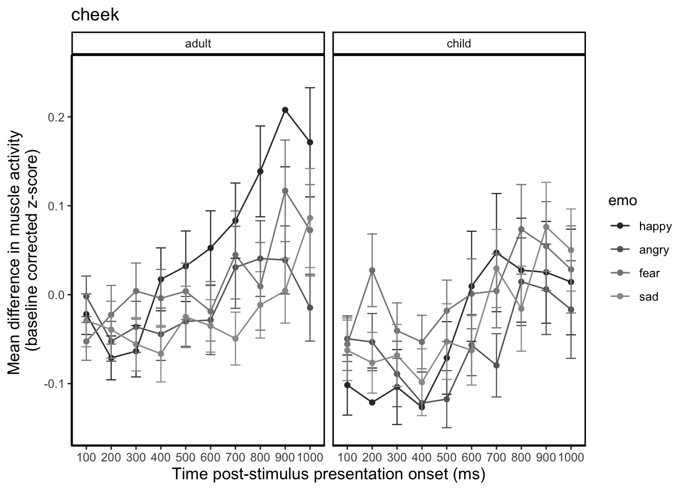
ggsave("emotionbymodel.png")Saving 7 x 5 in imagecplot2 <- cheek_plot %>%
filter(emo %in% c("happy", "angry")) %>%
group_by(time_bin, model, emo) %>%
summarise(meanZ = mean(zdiff, na.rm = TRUE),
sd_RMS = sd(zdiff, na.rm = TRUE),
n = n(),
stderr = sd_RMS/sqrt(n)) %>%
ggplot(aes(x = time_bin, y = meanZ, group = emo, colour = emo)) +
geom_point() +
geom_line() +
scale_colour_grey(start = 0.2, end = 0.6) +
geom_errorbar(aes(ymin = meanZ-stderr, ymax = meanZ+stderr), size = .4, width = .4) +
theme_classic() +
theme(panel.grid.major = element_blank(), panel.grid.minor = element_blank(), panel.background = element_rect(colour = "black", size = 1)) +
facet_wrap(~model) +
scale_y_continuous(limits = c(-0.15, 0.25)) +
labs(title = "cheek", y = "Mean difference in muscle activity
(baseline corrected z-score)", x = "Time post-stimulus presentation onset (ms)") +
easy_x_axis_title_size(size = 12) +
easy_y_axis_title_size(size = 12) `summarise()` regrouping output by 'time_bin', 'model' (override with `.groups` argument)cplot2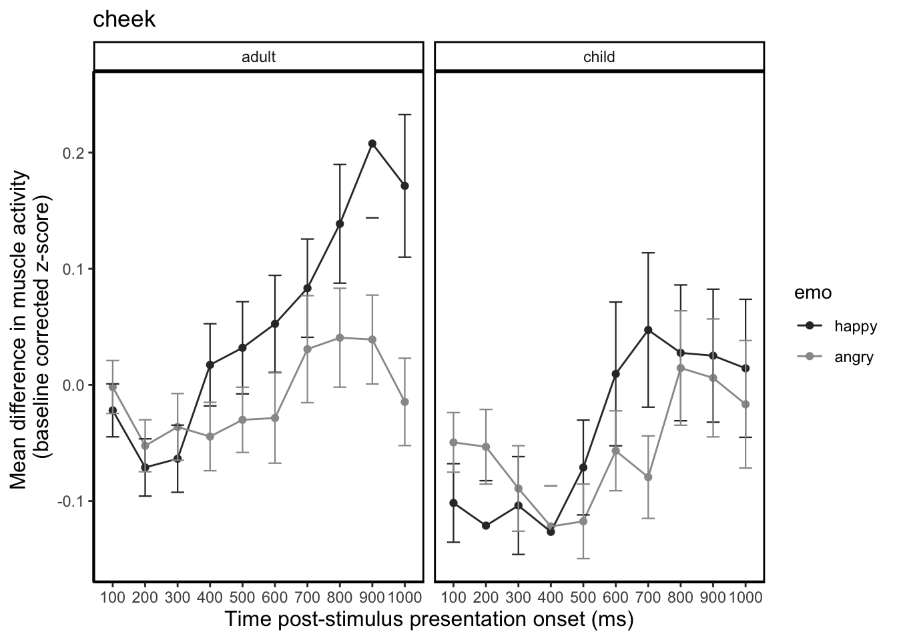
ggsave("emoxmodelHA.png")Saving 7 x 5 in imagecplot3 <- cheek_plot %>%
filter(emo %in% c("fear", "sad")) %>%
group_by(time_bin, model, emo) %>%
summarise(meanZ = mean(zdiff, na.rm = TRUE),
sd_RMS = sd(zdiff, na.rm = TRUE),
n = n(),
stderr = sd_RMS/sqrt(n)) %>%
ggplot(aes(x = time_bin, y = meanZ, group = emo, colour = emo)) +
geom_point() +
geom_line() +
scale_colour_grey(start = 0.2, end = 0.6) +
geom_errorbar(aes(ymin = meanZ-stderr, ymax = meanZ+stderr), size = .4, width = .4) +
theme_classic() +
theme(panel.grid.major = element_blank(), panel.grid.minor = element_blank(), panel.background = element_rect(colour = "black", size = 1)) +
facet_wrap(~model) +
scale_y_continuous(limits = c(-0.15, 0.25)) +
labs(title = "cheek", y = "Mean difference in muscle activity
(baseline corrected z-score)", x = "Time post-stimulus presentation onset (ms)") +
easy_x_axis_title_size(size = 12) +
easy_y_axis_title_size(size = 12) `summarise()` regrouping output by 'time_bin', 'model' (override with `.groups` argument)cplot3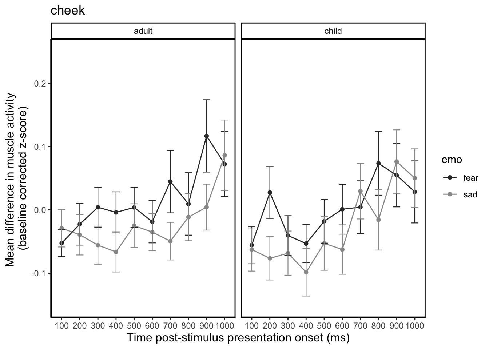
ggsave("emoxmodelFS.png")Saving 7 x 5 in imagecplot4 <- cheek_plot %>%
group_by(model, emo) %>%
summarise(meanZ = mean(zdiff, na.rm = TRUE),
sd_RMS = sd(zdiff, na.rm = TRUE),
n = n(), stderr = sd_RMS/sqrt(n)) %>%
ggplot(aes(x = emo, y = meanZ, fill = model)) +
geom_col(position = "dodge") +
theme_apa(base_size = 14) +
scale_fill_grey(start = 0.2, end = 0.9) +
geom_errorbar(aes(ymin = meanZ-stderr, ymax = meanZ+stderr), size = .4, width = .4, position = position_dodge(.9)) +
theme_classic() +
theme(panel.grid.major = element_blank(), panel.grid.minor = element_blank(), panel.background = element_rect(colour = "black", size = 1)) +
scale_y_continuous(limits = c(-0.1, 0.1)) +
labs(title = "cheek", y = "Mean z-score difference (RMS) from baseline
(averaged across bins)", x = "Emotion") +
easy_x_axis_title_size(size = 12) +
easy_y_axis_title_size(size = 12)`summarise()` regrouping output by 'model' (override with `.groups` argument)cplot4 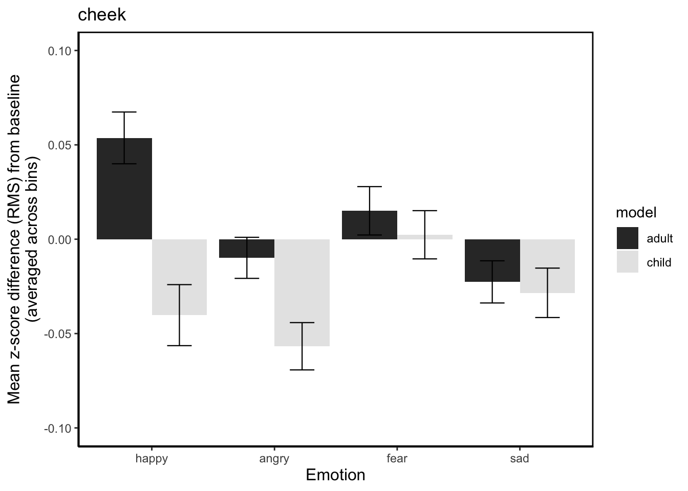
cplot5 <- cheek_plot %>%
group_by(model, emo) %>%
summarise(meanZ = mean(zdiff, na.rm = TRUE),
sd_RMS = sd(zdiff, na.rm = TRUE),
n = n(), stderr = sd_RMS/sqrt(n)) %>%
ggplot(aes(x = model, y = meanZ, fill = emo)) +
geom_col(position = "dodge") +
theme_apa(base_size = 14) +
scale_fill_grey(start = 0.2, end = 0.9) +
geom_errorbar(aes(ymin = meanZ-stderr, ymax = meanZ+stderr), size = .4, width = .4, position = position_dodge(.9)) +
theme_classic() +
theme(panel.grid.major = element_blank(), panel.grid.minor = element_blank(), panel.background = element_rect(colour = "black", size = 1)) +
scale_y_continuous(limits = c(-0.1, 0.1)) +
labs(y = "Mean z-score difference (RMS) from baseline
(averaged across bins)", x = "Emotion") +
easy_x_axis_title_size(size = 12) +
easy_y_axis_title_size(size = 12)`summarise()` regrouping output by 'model' (override with `.groups` argument)cplot5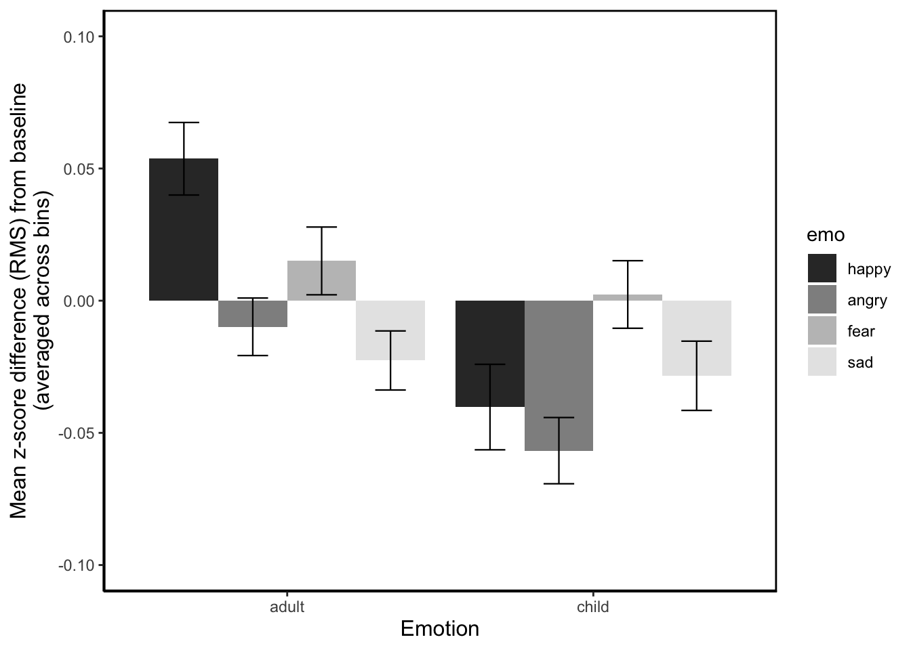
ggsave("emomodelnobins.png")Saving 7 x 5 in imageEyeballing CHEEK output. Looks like we have significant bin differences late in the trial (bin8, bin9, bin10) and sig emotion x bin differences late in the trial (bin8 and bin9) for angry. Which makes sense when you look at the plot.
Riley— what happened to the error bar at bin 9 adult?? can you check it out?
print(cplot2)
| Version | Author | Date |
|---|---|---|
| 930b045 | RileyFerguson | 2020-09-16 |
I am suprised that the model x bin x emo effects late in the trial are not sig, because the emo x bin difference seems to be driven by differences in adult. BUT, the effect of model isn’t significant so we should probably average across child and adult in the plot.No effects involving model, so we should probably plot across model.
cplot6 <- cheek_plot %>%
filter(emo %in% c("happy", "angry")) %>%
group_by(time_bin, emo) %>%
summarise(meanZ = mean(zdiff, na.rm = TRUE),
sd_RMS = sd(zdiff, na.rm = TRUE),
n = n(),
stderr = sd_RMS/sqrt(n)) %>%
ggplot(aes(x = time_bin, y = meanZ, group = emo, colour = emo)) +
geom_point() +
geom_line() +
scale_colour_grey(start = 0.2, end = 0.6) +
geom_errorbar(aes(ymin = meanZ-stderr, ymax = meanZ+stderr), size = .4, width = .4) +
theme_classic() +
theme(panel.grid.major = element_blank(), panel.grid.minor = element_blank(), panel.background = element_rect(colour = "black", size = 1)) +
scale_y_continuous(limits = c(-0.15, 0.25)) +
labs(title = "cheek", y = "Mean difference in muscle activity
(baseline corrected z-score)", x = "Time post-stimulus presentation onset (ms)") +
easy_x_axis_title_size(size = 12) +
easy_y_axis_title_size(size = 12) `summarise()` regrouping output by 'time_bin' (override with `.groups` argument)cplot6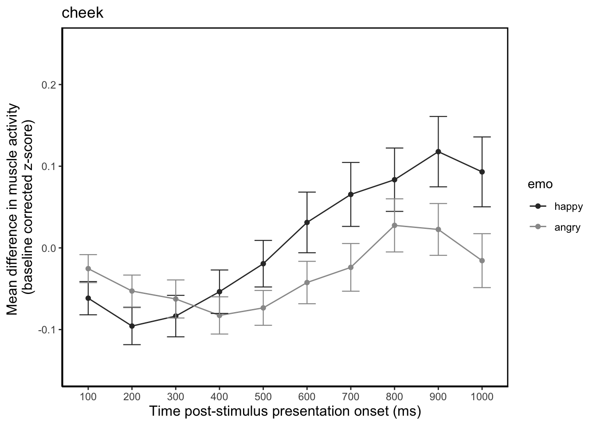
These lmm effects are always relative to the reference level of the factor (bin 1 for bin and happy for emo). So the weird notation emoangry:bindiff_bin9 is referring to a significant difference in cheek activity between angry (and the reference level happy) in bins 9 and 10.
Also it is a bit like when you have main effects and interactions in an ANOVA. If there is an interaction between bin and emotion, you don’t go into a big explanation of the main effect of bin, because the interaction is telling you that the change over time DIFFERs by emotion- in this case is greater for happy than angry. So you can refer to significant effects of bin late in the trial (bins 8 - 10), but it is kinda meaningless 1. because it is talking about AVERAGED across EVERYTHING bins 8-10 differ from bin1 (the reference) AND 2. there is an interaction so that change over time differs by emotion.
Example re how to write about this in my dynamic repo here
https://jenrichmond.github.io/dynamicRFM/7_CHEEKanalysis_happy_angry.html#write_up
brow_data <- df %>%
filter(emo %in% c("happy", "angry", "fear", "sad")) %>%
filter(muscle == "brow") %>%
arrange(pp_no, model, trial, bin)
brow_data$emo <- fct_relevel(brow_data$emo, c("happy", "angry", "fear", "sad"))
brow_data$bin <- fct_relevel(brow_data$bin, c("diff_bin1", "diff_bin2", "diff_bin3", "diff_bin4", "diff_bin5", "diff_bin6", "diff_bin7", "diff_bin8", "diff_bin9", "diff_bin10"))
levels(brow_data$bin) [1] "diff_bin1" "diff_bin2" "diff_bin3" "diff_bin4" "diff_bin5"
[6] "diff_bin6" "diff_bin7" "diff_bin8" "diff_bin9" "diff_bin10"naniar::vis_miss(brow_data)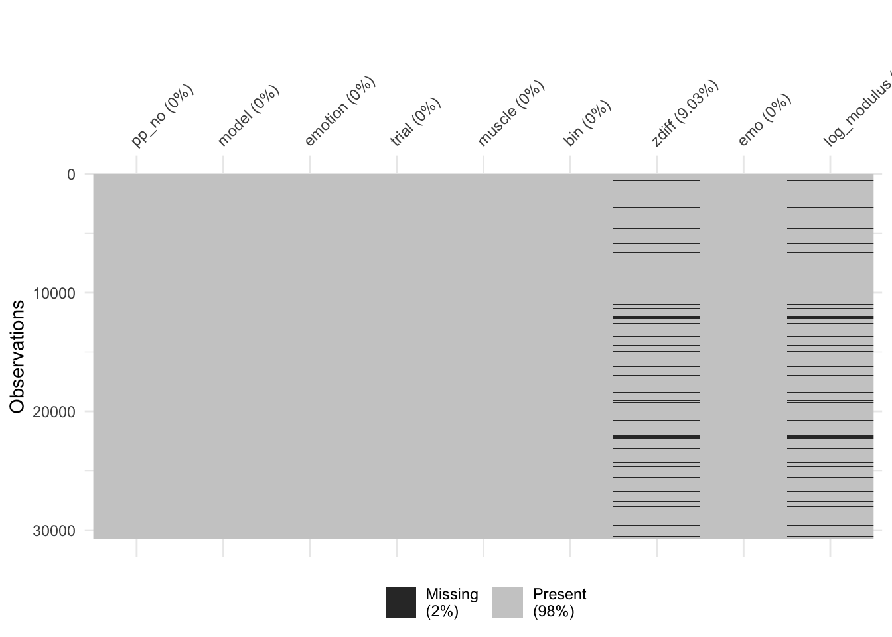
add “model” to best fit from 10_brow_analysis
This model adds model to best fit model (including slopes for emo)
child_brow_lm_2 <- lmer(log_modulus_new ~ emo + bin + emo*bin + (1 + emo|pp_no), data = HA_child_brow, REML = FALSE)
brow_lm_1 <- lmer(log_modulus ~ emo + bin + model +
emo*bin + bin*model +
emo*bin*model +
(1 + emo|pp_no) ,
data = brow_data, REML = FALSE)Warning in checkConv(attr(opt, "derivs"), opt$par, ctrl =
control$checkConv, : Model failed to converge with max|grad| = 0.0060165
(tol = 0.002, component 1)beepr::beep()brow_lm_2 <- lmer(log_modulus ~ emo + bin + model +
emo*bin + bin*model +
emo*bin*model +
(1|pp_no) ,
data = brow_data, REML = FALSE)
beepr::beep()yes model with slope does better (AIC = 32862) than model with just intercepts (AIC = 33453).
AIC(brow_lm_1)[1] 32862.95AIC(brow_lm_2)[1] 33453anova(brow_lm_1, brow_lm_2)Data: brow_data
Models:
brow_lm_2: log_modulus ~ emo + bin + model + emo * bin + bin * model + emo *
brow_lm_2: bin * model + (1 | pp_no)
brow_lm_1: log_modulus ~ emo + bin + model + emo * bin + bin * model + emo *
brow_lm_1: bin * model + (1 + emo | pp_no)
Df AIC BIC logLik deviance Chisq Chi Df Pr(>Chisq)
brow_lm_2 82 33453 34129 -16644 33289
brow_lm_1 91 32863 33613 -16340 32681 608.05 9 < 2.2e-16 ***
---
Signif. codes: 0 '***' 0.001 '**' 0.01 '*' 0.05 '.' 0.1 ' ' 1summary(brow_lm_1)Linear mixed model fit by maximum likelihood . t-tests use
Satterthwaite's method [lmerModLmerTest]
Formula:
log_modulus ~ emo + bin + model + emo * bin + bin * model + emo *
bin * model + (1 + emo | pp_no)
Data: brow_data
AIC BIC logLik deviance df.resid
32862.9 33612.7 -16340.5 32680.9 27873
Scaled residuals:
Min 1Q Median 3Q Max
-4.5589 -0.5498 -0.0505 0.4956 6.2087
Random effects:
Groups Name Variance Std.Dev. Corr
pp_no (Intercept) 0.007155 0.08459
emoangry 0.015783 0.12563 -0.61
emofear 0.017751 0.13323 -0.55 0.70
emosad 0.014860 0.12190 -0.75 0.40 0.22
Residual 0.185821 0.43107
Number of obs: 27964, groups: pp_no, 50
Fixed effects:
Estimate Std. Error df t value
(Intercept) -7.133e-03 2.594e-02 7.317e+02 -0.275
emoangry -4.290e-02 3.716e-02 6.500e+02 -1.154
emofear -3.682e-02 3.761e-02 5.400e+02 -0.979
emosad -1.230e-02 3.700e-02 7.354e+02 -0.332
bindiff_bin2 -2.727e-02 3.247e-02 2.776e+04 -0.840
bindiff_bin3 -2.091e-02 3.245e-02 2.776e+04 -0.644
bindiff_bin4 -4.068e-03 3.234e-02 2.776e+04 -0.126
bindiff_bin5 -2.444e-03 3.252e-02 2.776e+04 -0.075
bindiff_bin6 -1.962e-02 3.238e-02 2.776e+04 -0.606
bindiff_bin7 -1.736e-02 3.252e-02 2.776e+04 -0.534
bindiff_bin8 -2.156e-02 3.250e-02 2.776e+04 -0.664
bindiff_bin9 -1.759e-02 3.245e-02 2.776e+04 -0.542
bindiff_bin10 -3.537e-02 3.247e-02 2.776e+04 -1.089
modelchild -4.002e-02 3.277e-02 2.778e+04 -1.221
emoangry:bindiff_bin2 6.199e-02 4.609e-02 2.776e+04 1.345
emofear:bindiff_bin2 6.295e-02 4.591e-02 2.776e+04 1.371
emosad:bindiff_bin2 4.070e-02 4.590e-02 2.776e+04 0.887
emoangry:bindiff_bin3 3.534e-02 4.599e-02 2.776e+04 0.768
emofear:bindiff_bin3 9.227e-02 4.581e-02 2.776e+04 2.014
emosad:bindiff_bin3 8.798e-03 4.589e-02 2.776e+04 0.192
emoangry:bindiff_bin4 -1.211e-02 4.582e-02 2.776e+04 -0.264
emofear:bindiff_bin4 3.276e-02 4.573e-02 2.776e+04 0.716
emosad:bindiff_bin4 -3.252e-02 4.582e-02 2.776e+04 -0.710
emoangry:bindiff_bin5 2.216e-03 4.599e-02 2.776e+04 0.048
emofear:bindiff_bin5 5.683e-02 4.591e-02 2.776e+04 1.238
emosad:bindiff_bin5 -9.309e-03 4.606e-02 2.776e+04 -0.202
emoangry:bindiff_bin6 3.399e-02 4.588e-02 2.776e+04 0.741
emofear:bindiff_bin6 5.050e-02 4.584e-02 2.776e+04 1.102
emosad:bindiff_bin6 2.911e-02 4.592e-02 2.776e+04 0.634
emoangry:bindiff_bin7 3.790e-02 4.594e-02 2.776e+04 0.825
emofear:bindiff_bin7 3.166e-02 4.580e-02 2.776e+04 0.691
emosad:bindiff_bin7 5.254e-03 4.603e-02 2.776e+04 0.114
emoangry:bindiff_bin8 3.956e-02 4.602e-02 2.776e+04 0.860
emofear:bindiff_bin8 2.090e-02 4.589e-02 2.776e+04 0.455
emosad:bindiff_bin8 -7.542e-04 4.605e-02 2.776e+04 -0.016
emoangry:bindiff_bin9 3.262e-02 4.604e-02 2.776e+04 0.708
emofear:bindiff_bin9 3.303e-02 4.586e-02 2.776e+04 0.720
emosad:bindiff_bin9 -4.177e-02 4.597e-02 2.776e+04 -0.909
emoangry:bindiff_bin10 2.598e-02 4.601e-02 2.776e+04 0.565
emofear:bindiff_bin10 5.221e-02 4.589e-02 2.776e+04 1.138
emosad:bindiff_bin10 2.725e-02 4.603e-02 2.776e+04 0.592
bindiff_bin2:modelchild 1.227e-02 4.624e-02 2.776e+04 0.265
bindiff_bin3:modelchild 3.532e-02 4.612e-02 2.776e+04 0.766
bindiff_bin4:modelchild -1.529e-03 4.610e-02 2.776e+04 -0.033
bindiff_bin5:modelchild 2.798e-02 4.616e-02 2.776e+04 0.606
bindiff_bin6:modelchild 3.103e-02 4.608e-02 2.776e+04 0.673
bindiff_bin7:modelchild 4.076e-02 4.617e-02 2.776e+04 0.883
bindiff_bin8:modelchild 3.406e-02 4.622e-02 2.776e+04 0.737
bindiff_bin9:modelchild 4.762e-03 4.617e-02 2.776e+04 0.103
bindiff_bin10:modelchild 4.861e-03 4.621e-02 2.776e+04 0.105
emoangry:modelchild 2.587e-02 4.638e-02 2.778e+04 0.558
emofear:modelchild 2.395e-02 4.636e-02 2.778e+04 0.517
emosad:modelchild -2.932e-03 4.653e-02 2.778e+04 -0.063
emoangry:bindiff_bin2:modelchild -1.269e-02 6.550e-02 2.776e+04 -0.194
emofear:bindiff_bin2:modelchild -4.637e-02 6.542e-02 2.776e+04 -0.709
emosad:bindiff_bin2:modelchild 2.242e-02 6.543e-02 2.776e+04 0.343
emoangry:bindiff_bin3:modelchild -4.668e-02 6.532e-02 2.776e+04 -0.715
emofear:bindiff_bin3:modelchild -1.177e-01 6.539e-02 2.776e+04 -1.800
emosad:bindiff_bin3:modelchild -2.527e-02 6.531e-02 2.776e+04 -0.387
emoangry:bindiff_bin4:modelchild 1.691e-02 6.519e-02 2.776e+04 0.259
emofear:bindiff_bin4:modelchild 9.452e-03 6.522e-02 2.776e+04 0.145
emosad:bindiff_bin4:modelchild 4.900e-02 6.532e-02 2.776e+04 0.750
emoangry:bindiff_bin5:modelchild -2.805e-02 6.533e-02 2.776e+04 -0.429
emofear:bindiff_bin5:modelchild -4.321e-02 6.531e-02 2.776e+04 -0.662
emosad:bindiff_bin5:modelchild 2.367e-03 6.540e-02 2.776e+04 0.036
emoangry:bindiff_bin6:modelchild -4.275e-02 6.523e-02 2.776e+04 -0.655
emofear:bindiff_bin6:modelchild -2.299e-02 6.523e-02 2.776e+04 -0.352
emosad:bindiff_bin6:modelchild 7.542e-03 6.528e-02 2.776e+04 0.116
emoangry:bindiff_bin7:modelchild -2.881e-02 6.523e-02 2.776e+04 -0.442
emofear:bindiff_bin7:modelchild -4.718e-02 6.522e-02 2.776e+04 -0.723
emosad:bindiff_bin7:modelchild 1.827e-02 6.547e-02 2.776e+04 0.279
emoangry:bindiff_bin8:modelchild 3.581e-02 6.544e-02 2.776e+04 0.547
emofear:bindiff_bin8:modelchild -2.226e-02 6.533e-02 2.776e+04 -0.341
emosad:bindiff_bin8:modelchild 4.401e-02 6.553e-02 2.776e+04 0.672
emoangry:bindiff_bin9:modelchild 1.180e-02 6.543e-02 2.776e+04 0.180
emofear:bindiff_bin9:modelchild -1.297e-02 6.538e-02 2.776e+04 -0.198
emosad:bindiff_bin9:modelchild 1.133e-01 6.555e-02 2.776e+04 1.728
emoangry:bindiff_bin10:modelchild 6.248e-02 6.553e-02 2.776e+04 0.953
emofear:bindiff_bin10:modelchild -2.658e-02 6.558e-02 2.776e+04 -0.405
emosad:bindiff_bin10:modelchild 5.471e-02 6.581e-02 2.776e+04 0.831
Pr(>|t|)
(Intercept) 0.7834
emoangry 0.2488
emofear 0.3280
emosad 0.7396
bindiff_bin2 0.4011
bindiff_bin3 0.5194
bindiff_bin4 0.8999
bindiff_bin5 0.9401
bindiff_bin6 0.5445
bindiff_bin7 0.5935
bindiff_bin8 0.5070
bindiff_bin9 0.5878
bindiff_bin10 0.2761
modelchild 0.2220
emoangry:bindiff_bin2 0.1786
emofear:bindiff_bin2 0.1703
emosad:bindiff_bin2 0.3753
emoangry:bindiff_bin3 0.4423
emofear:bindiff_bin3 0.0440 *
emosad:bindiff_bin3 0.8480
emoangry:bindiff_bin4 0.7915
emofear:bindiff_bin4 0.4738
emosad:bindiff_bin4 0.4779
emoangry:bindiff_bin5 0.9616
emofear:bindiff_bin5 0.2158
emosad:bindiff_bin5 0.8398
emoangry:bindiff_bin6 0.4588
emofear:bindiff_bin6 0.2707
emosad:bindiff_bin6 0.5261
emoangry:bindiff_bin7 0.4094
emofear:bindiff_bin7 0.4893
emosad:bindiff_bin7 0.9091
emoangry:bindiff_bin8 0.3901
emofear:bindiff_bin8 0.6488
emosad:bindiff_bin8 0.9869
emoangry:bindiff_bin9 0.4787
emofear:bindiff_bin9 0.4714
emosad:bindiff_bin9 0.3635
emoangry:bindiff_bin10 0.5723
emofear:bindiff_bin10 0.2552
emosad:bindiff_bin10 0.5538
bindiff_bin2:modelchild 0.7908
bindiff_bin3:modelchild 0.4438
bindiff_bin4:modelchild 0.9735
bindiff_bin5:modelchild 0.5444
bindiff_bin6:modelchild 0.5007
bindiff_bin7:modelchild 0.3774
bindiff_bin8:modelchild 0.4612
bindiff_bin9:modelchild 0.9179
bindiff_bin10:modelchild 0.9162
emoangry:modelchild 0.5770
emofear:modelchild 0.6054
emosad:modelchild 0.9498
emoangry:bindiff_bin2:modelchild 0.8464
emofear:bindiff_bin2:modelchild 0.4784
emosad:bindiff_bin2:modelchild 0.7319
emoangry:bindiff_bin3:modelchild 0.4749
emofear:bindiff_bin3:modelchild 0.0719 .
emosad:bindiff_bin3:modelchild 0.6989
emoangry:bindiff_bin4:modelchild 0.7953
emofear:bindiff_bin4:modelchild 0.8848
emosad:bindiff_bin4:modelchild 0.4532
emoangry:bindiff_bin5:modelchild 0.6677
emofear:bindiff_bin5:modelchild 0.5082
emosad:bindiff_bin5:modelchild 0.9711
emoangry:bindiff_bin6:modelchild 0.5122
emofear:bindiff_bin6:modelchild 0.7246
emosad:bindiff_bin6:modelchild 0.9080
emoangry:bindiff_bin7:modelchild 0.6587
emofear:bindiff_bin7:modelchild 0.4695
emosad:bindiff_bin7:modelchild 0.7803
emoangry:bindiff_bin8:modelchild 0.5843
emofear:bindiff_bin8:modelchild 0.7333
emosad:bindiff_bin8:modelchild 0.5018
emoangry:bindiff_bin9:modelchild 0.8568
emofear:bindiff_bin9:modelchild 0.8427
emosad:bindiff_bin9:modelchild 0.0840 .
emoangry:bindiff_bin10:modelchild 0.3404
emofear:bindiff_bin10:modelchild 0.6852
emosad:bindiff_bin10:modelchild 0.4058
---
Signif. codes: 0 '***' 0.001 '**' 0.01 '*' 0.05 '.' 0.1 ' ' 1
Correlation matrix not shown by default, as p = 80 > 12.
Use print(x, correlation=TRUE) or
vcov(x) if you need itconvergence code: 0
Model failed to converge with max|grad| = 0.0060165 (tol = 0.002, component 1)tidy_brow1 <- tidy(brow_lm_1)#plot cheek data for all emo
brow_plot <- brow_data %>%
arrange(pp_no, model, trial, bin)#create new column called time_bin
brow_plot$time_bin <- brow_plot$bin
brow_plot <- brow_plot %>%
mutate(time_bin = recode(bin, "diff_bin1" = "100",
"diff_bin2" = "200",
"diff_bin3" = "300",
"diff_bin4" = "400",
"diff_bin5" = "500",
"diff_bin6" = "600",
"diff_bin7" = "700",
"diff_bin8" = "800",
"diff_bin9" = "900",
"diff_bin10" = "1000", .default = "NA"))bplot1 <- brow_plot %>%
group_by(time_bin, model, emo) %>%
summarise(meanZ = mean(zdiff, na.rm = TRUE),
sd_RMS = sd(zdiff, na.rm = TRUE),
n = n(),
stderr = sd_RMS/sqrt(n)) %>%
ggplot(aes(x = time_bin, y = meanZ, group = emo, colour = emo)) +
geom_point() +
geom_line() +
scale_colour_grey(start = 0.2, end = 0.6) +
geom_errorbar(aes(ymin = meanZ-stderr, ymax = meanZ+stderr), size = .4, width = .4) +
theme_classic() +
theme(panel.grid.major = element_blank(), panel.grid.minor = element_blank(), panel.background = element_rect(colour = "black", size = 1)) +
facet_wrap(~model) +
scale_y_continuous(limits = c(-0.15, 0.25)) +
labs(title = "brow", y = "Mean difference in muscle activity
(baseline corrected z-score)", x = "Time post-stimulus presentation onset (ms)") +
easy_x_axis_title_size(size = 12) +
easy_y_axis_title_size(size = 12) `summarise()` regrouping output by 'time_bin', 'model' (override with `.groups` argument)print(bplot1)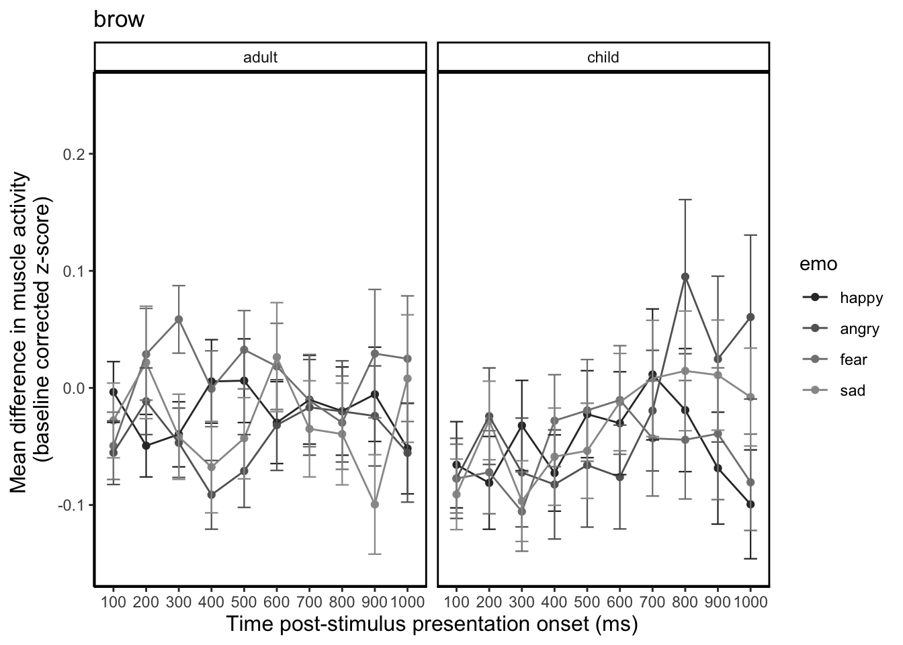
ggsave("emotionbymodelbrow.png")Saving 7 x 5 in image#emotion by model - happy and angry
bplot2 <- brow_plot %>%
filter(emo %in% c("happy", "angry")) %>%
group_by(time_bin, model, emo) %>%
summarise(meanZ = mean(zdiff, na.rm = TRUE),
sd_RMS = sd(zdiff, na.rm = TRUE),
n = n(),
stderr = sd_RMS/sqrt(n)) %>%
ggplot(aes(x = time_bin, y = meanZ, group = emo, colour = emo)) +
geom_point() +
geom_line() +
scale_colour_grey(start = 0.2, end = 0.6) +
geom_errorbar(aes(ymin = meanZ-stderr, ymax = meanZ+stderr), size = .4, width = .4) +
theme_classic() +
theme(panel.grid.major = element_blank(), panel.grid.minor = element_blank(), panel.background = element_rect(colour = "black", size = 1)) +
facet_wrap(~model) +
scale_y_continuous(limits = c(-0.15, 0.25)) +
labs(title = "brow", y = "Mean difference in muscle activity
(baseline corrected z-score)", x = "Time post-stimulus presentation onset (ms)") +
easy_x_axis_title_size(size = 12) +
easy_y_axis_title_size(size = 12) `summarise()` regrouping output by 'time_bin', 'model' (override with `.groups` argument)bplot2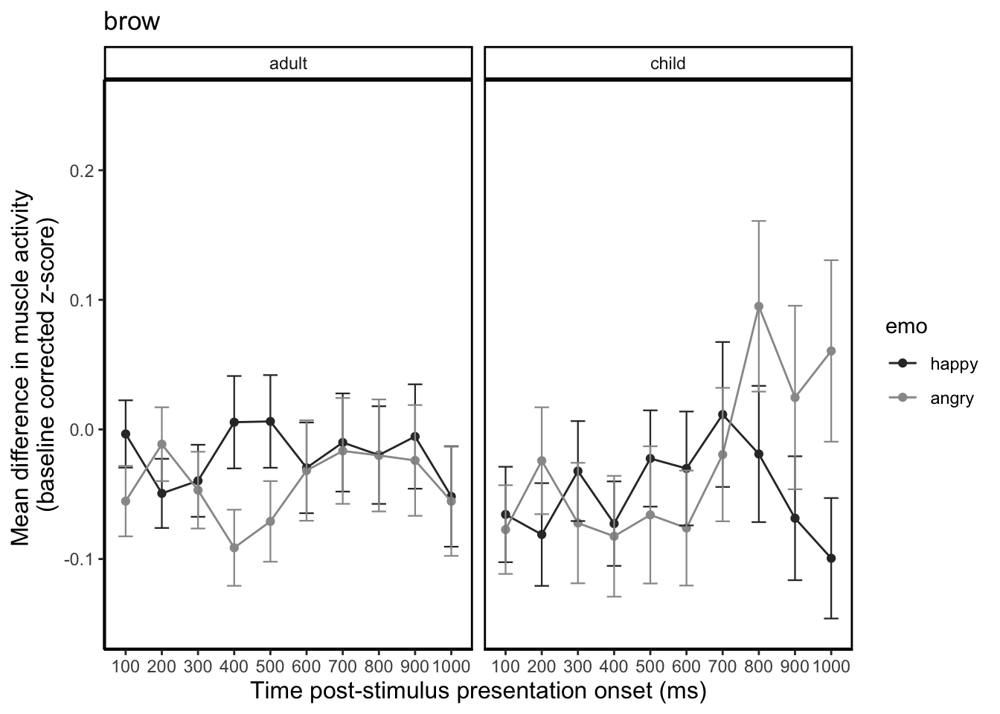
ggsave("emoxmodelHAbrow.png")Saving 7 x 5 in image#emotion by model - fear and sad
bplot3 <- brow_plot %>%
filter(emo %in% c("fear", "sad")) %>%
group_by(time_bin, model, emo) %>%
summarise(meanZ = mean(zdiff, na.rm = TRUE),
sd_RMS = sd(zdiff, na.rm = TRUE),
n = n(),
stderr = sd_RMS/sqrt(n)) %>%
ggplot(aes(x = time_bin, y = meanZ, group = emo, colour = emo)) +
geom_point() +
geom_line() +
scale_colour_grey(start = 0.2, end = 0.6) +
geom_errorbar(aes(ymin = meanZ-stderr, ymax = meanZ+stderr), size = .4, width = .4) +
theme_classic() +
theme(panel.grid.major = element_blank(), panel.grid.minor = element_blank(), panel.background = element_rect(colour = "black", size = 1)) +
facet_wrap(~model) +
scale_y_continuous(limits = c(-0.15, 0.25)) +
labs(title = "brow", y = "Mean difference in muscle activity
(baseline corrected z-score)", x = "Time post-stimulus presentation onset (ms)") +
easy_x_axis_title_size(size = 12) +
easy_y_axis_title_size(size = 12) `summarise()` regrouping output by 'time_bin', 'model' (override with `.groups` argument)bplot3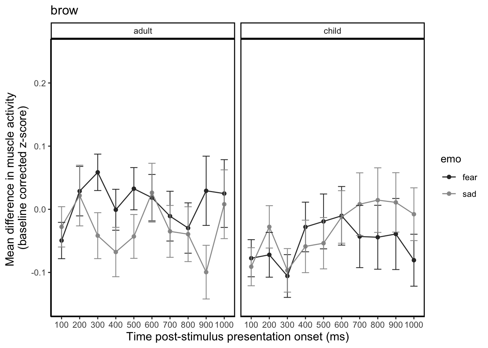
ggsave("emoxmodelFSbrow.png")Saving 7 x 5 in image#plot averaged across bins - emotion by model
bplot4 <- brow_plot %>%
group_by(model, emo) %>%
summarise(meanZ = mean(zdiff, na.rm = TRUE),
sd_RMS = sd(zdiff, na.rm = TRUE),
n = n(), stderr = sd_RMS/sqrt(n)) %>%
ggplot(aes(x = emo, y = meanZ, fill = model)) +
geom_col(position = "dodge") +
theme_apa(base_size = 14) +
scale_fill_grey(start = 0.2, end = 0.9) +
geom_errorbar(aes(ymin = meanZ-stderr, ymax = meanZ+stderr), size = .4, width = .4, position = position_dodge(.9)) +
theme_classic() +
theme(panel.grid.major = element_blank(), panel.grid.minor = element_blank(), panel.background = element_rect(colour = "black", size = 1)) +
scale_y_continuous(limits = c(-0.1, 0.1)) +
labs(title = "brow", y = "Mean z-score difference (RMS) from baseline
(averaged across bins)", x = "Model age") +
easy_x_axis_title_size(size = 12) +
easy_y_axis_title_size(size = 12)`summarise()` regrouping output by 'model' (override with `.groups` argument)bplot4 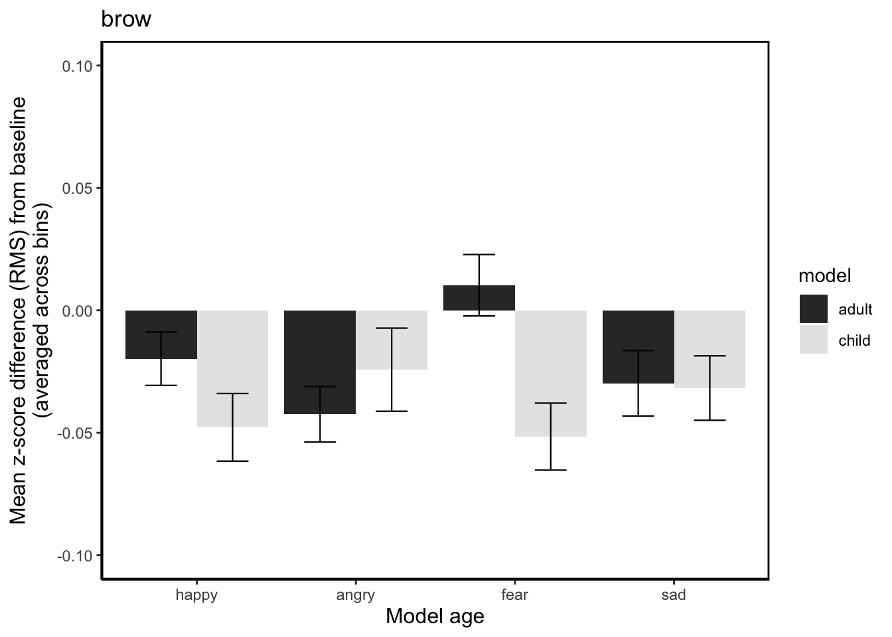
bplot5 <- brow_plot %>%
group_by(model, emo) %>%
summarise(meanZ = mean(zdiff, na.rm = TRUE),
sd_RMS = sd(zdiff, na.rm = TRUE),
n = n(), stderr = sd_RMS/sqrt(n)) %>%
ggplot(aes(x = model, y = meanZ, fill = emo)) +
geom_col(position = "dodge") +
theme_apa(base_size = 14) +
scale_fill_grey(start = 0.2, end = 0.9) +
geom_errorbar(aes(ymin = meanZ-stderr, ymax = meanZ+stderr), size = .4, width = .4, position = position_dodge(.9)) +
theme_classic() +
theme(panel.grid.major = element_blank(), panel.grid.minor = element_blank(), panel.background = element_rect(colour = "black", size = 1)) +
scale_y_continuous(limits = c(-0.1, 0.1)) +
labs(title = "brow", y = "Mean z-score difference (RMS) from baseline
(averaged across bins)", x = "Model age") +
easy_x_axis_title_size(size = 12) +
easy_y_axis_title_size(size = 12)`summarise()` regrouping output by 'model' (override with `.groups` argument)bplot5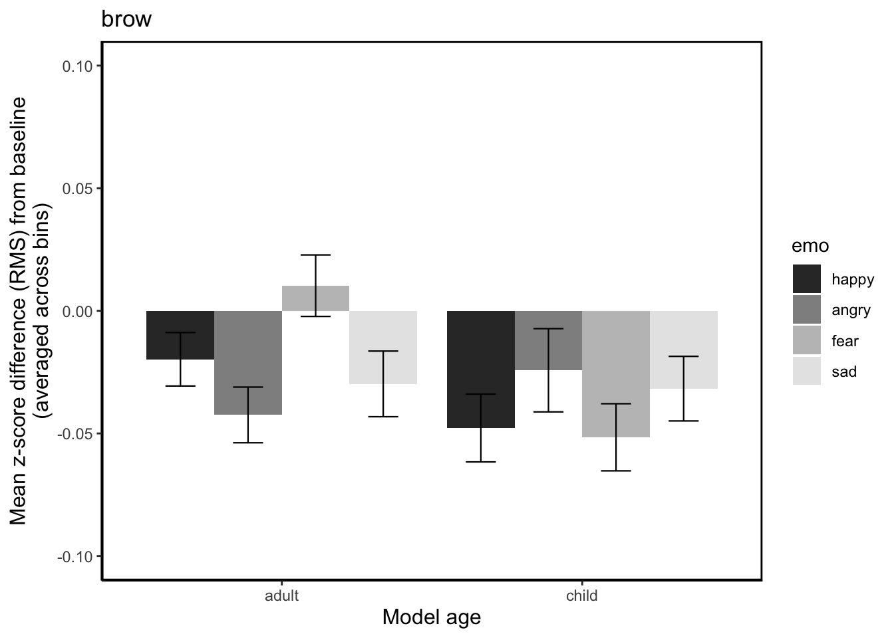
ggsave("emomodelnobinsbrow.png")Saving 7 x 5 in imagemaybe given the model with slopes officially doesn’t converge, we should be probably reporting the simpler one (just intercepts) that does. I am a bit confused why the slopes model doesn’t converge but then gives us a model object and lets us compare to the intercepts model AND gets a better fit than the intercepts. hmmm…
Q: are the effects different for the model that converges? i.e the one with just intercepts.
A: no, effect for model 1 and 2 are the same. The only sig effect is fear:bin3, which is telling us that bin3 brow response for fear differs from happy.
summary(brow_lm_2)Linear mixed model fit by maximum likelihood . t-tests use
Satterthwaite's method [lmerModLmerTest]
Formula:
log_modulus ~ emo + bin + model + emo * bin + bin * model + emo *
bin * model + (1 | pp_no)
Data: brow_data
AIC BIC logLik deviance df.resid
33453.0 34128.6 -16644.5 33289.0 27882
Scaled residuals:
Min 1Q Median 3Q Max
-4.4956 -0.5365 -0.0529 0.4876 6.1724
Random effects:
Groups Name Variance Std.Dev.
pp_no (Intercept) 0.002616 0.05115
Residual 0.191800 0.43795
Number of obs: 27964, groups: pp_no, 50
Fixed effects:
Estimate Std. Error df t value
(Intercept) -6.776e-03 2.447e-02 4.442e+03 -0.277
emoangry -4.390e-02 3.316e-02 2.791e+04 -1.324
emofear -3.490e-02 3.306e-02 2.791e+04 -1.056
emosad -1.224e-02 3.325e-02 2.791e+04 -0.368
bindiff_bin2 -2.749e-02 3.299e-02 2.791e+04 -0.833
bindiff_bin3 -2.188e-02 3.297e-02 2.791e+04 -0.664
bindiff_bin4 -5.184e-03 3.285e-02 2.791e+04 -0.158
bindiff_bin5 -3.294e-03 3.304e-02 2.791e+04 -0.100
bindiff_bin6 -2.047e-02 3.290e-02 2.791e+04 -0.622
bindiff_bin7 -1.755e-02 3.304e-02 2.791e+04 -0.531
bindiff_bin8 -2.334e-02 3.301e-02 2.791e+04 -0.707
bindiff_bin9 -1.771e-02 3.297e-02 2.791e+04 -0.537
bindiff_bin10 -3.688e-02 3.299e-02 2.791e+04 -1.118
modelchild -4.449e-02 3.328e-02 2.792e+04 -1.337
emoangry:bindiff_bin2 6.200e-02 4.682e-02 2.791e+04 1.324
emofear:bindiff_bin2 6.295e-02 4.664e-02 2.791e+04 1.350
emosad:bindiff_bin2 3.944e-02 4.663e-02 2.791e+04 0.846
emoangry:bindiff_bin3 3.633e-02 4.672e-02 2.791e+04 0.778
emofear:bindiff_bin3 9.365e-02 4.654e-02 2.791e+04 2.012
emosad:bindiff_bin3 8.230e-03 4.662e-02 2.791e+04 0.177
emoangry:bindiff_bin4 -1.039e-02 4.654e-02 2.791e+04 -0.223
emofear:bindiff_bin4 3.233e-02 4.646e-02 2.791e+04 0.696
emosad:bindiff_bin4 -3.159e-02 4.655e-02 2.791e+04 -0.679
emoangry:bindiff_bin5 3.751e-03 4.672e-02 2.791e+04 0.080
emofear:bindiff_bin5 5.485e-02 4.664e-02 2.791e+04 1.176
emosad:bindiff_bin5 -1.033e-02 4.679e-02 2.791e+04 -0.221
emoangry:bindiff_bin6 3.425e-02 4.661e-02 2.791e+04 0.735
emofear:bindiff_bin6 4.978e-02 4.657e-02 2.791e+04 1.069
emosad:bindiff_bin6 2.896e-02 4.665e-02 2.791e+04 0.621
emoangry:bindiff_bin7 3.779e-02 4.667e-02 2.791e+04 0.810
emofear:bindiff_bin7 3.052e-02 4.653e-02 2.791e+04 0.656
emosad:bindiff_bin7 4.122e-03 4.676e-02 2.791e+04 0.088
emoangry:bindiff_bin8 4.081e-02 4.675e-02 2.791e+04 0.873
emofear:bindiff_bin8 2.219e-02 4.662e-02 2.791e+04 0.476
emosad:bindiff_bin8 6.937e-04 4.678e-02 2.791e+04 0.015
emoangry:bindiff_bin9 3.239e-02 4.677e-02 2.791e+04 0.693
emofear:bindiff_bin9 3.349e-02 4.659e-02 2.791e+04 0.719
emosad:bindiff_bin9 -4.183e-02 4.669e-02 2.791e+04 -0.896
emoangry:bindiff_bin10 2.719e-02 4.674e-02 2.791e+04 0.582
emofear:bindiff_bin10 5.301e-02 4.662e-02 2.791e+04 1.137
emosad:bindiff_bin10 2.752e-02 4.676e-02 2.791e+04 0.589
bindiff_bin2:modelchild 1.218e-02 4.698e-02 2.791e+04 0.259
bindiff_bin3:modelchild 3.575e-02 4.686e-02 2.791e+04 0.763
bindiff_bin4:modelchild -1.760e-03 4.683e-02 2.791e+04 -0.038
bindiff_bin5:modelchild 2.780e-02 4.689e-02 2.791e+04 0.593
bindiff_bin6:modelchild 3.056e-02 4.681e-02 2.791e+04 0.653
bindiff_bin7:modelchild 4.028e-02 4.691e-02 2.791e+04 0.859
bindiff_bin8:modelchild 3.495e-02 4.696e-02 2.791e+04 0.744
bindiff_bin9:modelchild 3.767e-03 4.691e-02 2.791e+04 0.080
bindiff_bin10:modelchild 5.013e-03 4.694e-02 2.791e+04 0.107
emoangry:modelchild 3.492e-02 4.709e-02 2.791e+04 0.742
emofear:modelchild 3.269e-02 4.708e-02 2.791e+04 0.694
emosad:modelchild -2.090e-03 4.725e-02 2.791e+04 -0.044
emoangry:bindiff_bin2:modelchild -1.293e-02 6.654e-02 2.791e+04 -0.194
emofear:bindiff_bin2:modelchild -4.591e-02 6.646e-02 2.791e+04 -0.691
emosad:bindiff_bin2:modelchild 2.445e-02 6.647e-02 2.791e+04 0.368
emoangry:bindiff_bin3:modelchild -4.790e-02 6.636e-02 2.791e+04 -0.722
emofear:bindiff_bin3:modelchild -1.189e-01 6.643e-02 2.791e+04 -1.790
emosad:bindiff_bin3:modelchild -2.203e-02 6.635e-02 2.791e+04 -0.332
emoangry:bindiff_bin4:modelchild 1.621e-02 6.622e-02 2.791e+04 0.245
emofear:bindiff_bin4:modelchild 8.806e-03 6.626e-02 2.791e+04 0.133
emosad:bindiff_bin4:modelchild 5.167e-02 6.636e-02 2.791e+04 0.779
emoangry:bindiff_bin5:modelchild -2.906e-02 6.637e-02 2.791e+04 -0.438
emofear:bindiff_bin5:modelchild -4.073e-02 6.635e-02 2.791e+04 -0.614
emosad:bindiff_bin5:modelchild 6.202e-03 6.644e-02 2.791e+04 0.093
emoangry:bindiff_bin6:modelchild -4.157e-02 6.627e-02 2.791e+04 -0.627
emofear:bindiff_bin6:modelchild -2.197e-02 6.627e-02 2.791e+04 -0.332
emosad:bindiff_bin6:modelchild 1.102e-02 6.632e-02 2.791e+04 0.166
emoangry:bindiff_bin7:modelchild -2.813e-02 6.627e-02 2.791e+04 -0.424
emofear:bindiff_bin7:modelchild -4.602e-02 6.626e-02 2.791e+04 -0.694
emosad:bindiff_bin7:modelchild 2.185e-02 6.651e-02 2.791e+04 0.329
emoangry:bindiff_bin8:modelchild 3.455e-02 6.648e-02 2.791e+04 0.520
emofear:bindiff_bin8:modelchild -2.395e-02 6.636e-02 2.791e+04 -0.361
emosad:bindiff_bin8:modelchild 4.587e-02 6.657e-02 2.791e+04 0.689
emoangry:bindiff_bin9:modelchild 1.209e-02 6.647e-02 2.791e+04 0.182
emofear:bindiff_bin9:modelchild -1.476e-02 6.641e-02 2.791e+04 -0.222
emosad:bindiff_bin9:modelchild 1.156e-01 6.659e-02 2.791e+04 1.736
emoangry:bindiff_bin10:modelchild 6.235e-02 6.657e-02 2.791e+04 0.937
emofear:bindiff_bin10:modelchild -2.862e-02 6.662e-02 2.791e+04 -0.430
emosad:bindiff_bin10:modelchild 5.908e-02 6.685e-02 2.791e+04 0.884
Pr(>|t|)
(Intercept) 0.7819
emoangry 0.1855
emofear 0.2911
emosad 0.7129
bindiff_bin2 0.4047
bindiff_bin3 0.5068
bindiff_bin4 0.8746
bindiff_bin5 0.9206
bindiff_bin6 0.5339
bindiff_bin7 0.5952
bindiff_bin8 0.4795
bindiff_bin9 0.5911
bindiff_bin10 0.2636
modelchild 0.1813
emoangry:bindiff_bin2 0.1855
emofear:bindiff_bin2 0.1771
emosad:bindiff_bin2 0.3977
emoangry:bindiff_bin3 0.4368
emofear:bindiff_bin3 0.0442 *
emosad:bindiff_bin3 0.8599
emoangry:bindiff_bin4 0.8234
emofear:bindiff_bin4 0.4865
emosad:bindiff_bin4 0.4973
emoangry:bindiff_bin5 0.9360
emofear:bindiff_bin5 0.2396
emosad:bindiff_bin5 0.8253
emoangry:bindiff_bin6 0.4624
emofear:bindiff_bin6 0.2851
emosad:bindiff_bin6 0.5348
emoangry:bindiff_bin7 0.4182
emofear:bindiff_bin7 0.5119
emosad:bindiff_bin7 0.9298
emoangry:bindiff_bin8 0.3827
emofear:bindiff_bin8 0.6340
emosad:bindiff_bin8 0.9882
emoangry:bindiff_bin9 0.4886
emofear:bindiff_bin9 0.4722
emosad:bindiff_bin9 0.3704
emoangry:bindiff_bin10 0.5607
emofear:bindiff_bin10 0.2555
emosad:bindiff_bin10 0.5561
bindiff_bin2:modelchild 0.7953
bindiff_bin3:modelchild 0.4454
bindiff_bin4:modelchild 0.9700
bindiff_bin5:modelchild 0.5533
bindiff_bin6:modelchild 0.5139
bindiff_bin7:modelchild 0.3905
bindiff_bin8:modelchild 0.4567
bindiff_bin9:modelchild 0.9360
bindiff_bin10:modelchild 0.9149
emoangry:modelchild 0.4584
emofear:modelchild 0.4874
emosad:modelchild 0.9647
emoangry:bindiff_bin2:modelchild 0.8459
emofear:bindiff_bin2:modelchild 0.4897
emosad:bindiff_bin2:modelchild 0.7130
emoangry:bindiff_bin3:modelchild 0.4704
emofear:bindiff_bin3:modelchild 0.0734 .
emosad:bindiff_bin3:modelchild 0.7399
emoangry:bindiff_bin4:modelchild 0.8067
emofear:bindiff_bin4:modelchild 0.8943
emosad:bindiff_bin4:modelchild 0.4362
emoangry:bindiff_bin5:modelchild 0.6615
emofear:bindiff_bin5:modelchild 0.5393
emosad:bindiff_bin5:modelchild 0.9256
emoangry:bindiff_bin6:modelchild 0.5304
emofear:bindiff_bin6:modelchild 0.7402
emosad:bindiff_bin6:modelchild 0.8680
emoangry:bindiff_bin7:modelchild 0.6712
emofear:bindiff_bin7:modelchild 0.4874
emosad:bindiff_bin7:modelchild 0.7425
emoangry:bindiff_bin8:modelchild 0.6033
emofear:bindiff_bin8:modelchild 0.7182
emosad:bindiff_bin8:modelchild 0.4908
emoangry:bindiff_bin9:modelchild 0.8557
emofear:bindiff_bin9:modelchild 0.8242
emosad:bindiff_bin9:modelchild 0.0826 .
emoangry:bindiff_bin10:modelchild 0.3490
emofear:bindiff_bin10:modelchild 0.6675
emosad:bindiff_bin10:modelchild 0.3768
---
Signif. codes: 0 '***' 0.001 '**' 0.01 '*' 0.05 '.' 0.1 ' ' 1
Correlation matrix not shown by default, as p = 80 > 12.
Use print(x, correlation=TRUE) or
vcov(x) if you need itDoes that fear > happy at bin3 make sense from the plot??
print(bplot1)
| Version | Author | Date |
|---|---|---|
| 930b045 | RileyFerguson | 2020-09-16 |
argggh impossible to tell… again this effect does not involve model, so lets average across and see what happy vs fear looks like by bin.
Now this took me a little bit to work out, because when you average across model, it looks like this….and you think "there is nothing going on at bin 3, what is going on? But…
bplot6 <- brow_plot %>%
filter(emo %in% c("happy", "fear")) %>%
group_by(time_bin, emo) %>%
summarise(meanZ = mean(zdiff, na.rm = TRUE),
sd_RMS = sd(zdiff, na.rm = TRUE),
n = n(),
stderr = sd_RMS/sqrt(n)) %>%
ggplot(aes(x = time_bin, y = meanZ, group = emo, colour = emo)) +
geom_point() +
geom_line() +
scale_colour_grey(start = 0.2, end = 0.6) +
geom_errorbar(aes(ymin = meanZ-stderr, ymax = meanZ+stderr), size = .4, width = .4) +
theme_classic() +
theme(panel.grid.major = element_blank(), panel.grid.minor = element_blank(), panel.background = element_rect(colour = "black", size = 1)) +
scale_y_continuous(limits = c(-0.15, 0.25)) +
labs(title = "brow", y = "Mean difference in muscle activity
(baseline corrected z-score)", x = "Time post-stimulus presentation onset (ms)") +
easy_x_axis_title_size(size = 12) +
easy_y_axis_title_size(size = 12) `summarise()` regrouping output by 'time_bin' (override with `.groups` argument)bplot6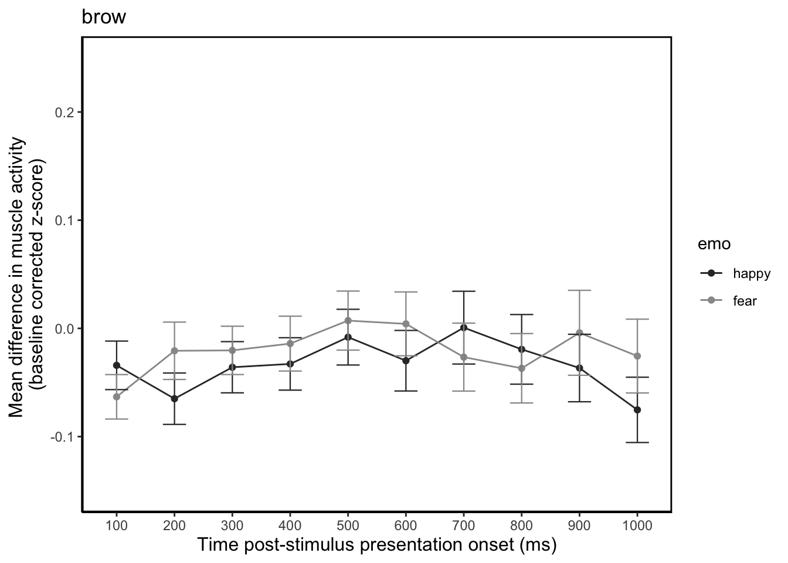 .. if you plot separately for adult and child you can see that the effect is driven by adult, its just that, like the effect for happy at bin 9-10 for cheek, the interaction isn’t significant.
bplot7 <- brow_plot %>%
filter(emo %in% c("happy", "fear")) %>%
group_by(model, time_bin, emo) %>%
summarise(meanZ = mean(zdiff, na.rm = TRUE),
sd_RMS = sd(zdiff, na.rm = TRUE),
n = n(),
stderr = sd_RMS/sqrt(n)) %>%
ggplot(aes(x = time_bin, y = meanZ, group = emo, colour = emo)) +
geom_point() +
geom_line() +
scale_colour_grey(start = 0.2, end = 0.6) +
geom_errorbar(aes(ymin = meanZ-stderr, ymax = meanZ+stderr), size = .4, width = .4) +
theme_classic() +
facet_wrap(~model) +
theme(panel.grid.major = element_blank(), panel.grid.minor = element_blank(), panel.background = element_rect(colour = "black", size = 1)) +
scale_y_continuous(limits = c(-0.15, 0.25)) +
labs(title = "brow", y = "Mean difference in muscle activity
(baseline corrected z-score)", x = "Time post-stimulus presentation onset (ms)") +
easy_x_axis_title_size(size = 12) +
easy_y_axis_title_size(size = 12) `summarise()` regrouping output by 'model', 'time_bin' (override with `.groups` argument)bplot6
sessionInfo()R version 3.5.1 (2018-07-02)
Platform: x86_64-apple-darwin15.6.0 (64-bit)
Running under: macOS Sierra 10.12.6
Matrix products: default
BLAS: /Library/Frameworks/R.framework/Versions/3.5/Resources/lib/libRblas.0.dylib
LAPACK: /Library/Frameworks/R.framework/Versions/3.5/Resources/lib/libRlapack.dylib
locale:
[1] en_AU.UTF-8/en_AU.UTF-8/en_AU.UTF-8/C/en_AU.UTF-8/en_AU.UTF-8
attached base packages:
[1] stats graphics grDevices utils datasets methods base
other attached packages:
[1] papaja_0.1.0.9842 ggeasy_0.1.2 beepr_1.3
[4] pixiedust_0.9.0 broom.mixed_0.2.6 lmerTest_3.1-0
[7] lme4_1.1-21 Matrix_1.2-14 here_0.1
[10] forcats_0.5.0 stringr_1.4.0 dplyr_1.0.1
[13] purrr_0.3.3 readr_1.3.1 tidyr_1.1.0
[16] tibble_3.0.3 ggplot2_3.3.2 tidyverse_1.3.0
loaded via a namespace (and not attached):
[1] nlme_3.1-137 fs_1.4.1 lubridate_1.7.4
[4] naniar_0.4.1 httr_1.4.1 rprojroot_1.3-2
[7] numDeriv_2016.8-1.1 tools_3.5.1 TMB_1.7.15
[10] backports_1.1.8 utf8_1.1.4 R6_2.4.1
[13] DBI_1.0.0 colorspace_1.4-1 withr_2.2.0
[16] tidyselect_1.1.0 compiler_3.5.1 git2r_0.27.1
[19] cli_2.0.2 rvest_0.3.6 xml2_1.3.2
[22] labeling_0.3 scales_1.1.1 digest_0.6.25
[25] minqa_1.2.4 rmarkdown_1.15 pkgconfig_2.0.3
[28] htmltools_0.5.0 dbplyr_1.4.4 rlang_0.4.7
[31] readxl_1.3.1 rstudioapi_0.11.0-9000 farver_2.0.3
[34] generics_0.0.2 jsonlite_1.7.0 magrittr_1.5
[37] Rcpp_1.0.5 munsell_0.5.0 fansi_0.4.1
[40] visdat_0.5.2 lifecycle_0.2.0 stringi_1.4.6
[43] whisker_0.4 yaml_2.2.1 MASS_7.3-51.1
[46] plyr_1.8.6 grid_3.5.1 blob_1.2.1
[49] promises_1.1.1 crayon_1.3.4 lattice_0.20-35
[52] haven_2.3.1 splines_3.5.1 hms_0.5.3
[55] knitr_1.23 pillar_1.4.6 boot_1.3-20
[58] reshape2_1.4.3 reprex_0.3.0 glue_1.4.1
[61] evaluate_0.14 modelr_0.1.8 vctrs_0.3.2
[64] nloptr_1.2.2.1 httpuv_1.5.2 cellranger_1.1.0
[67] gtable_0.3.0 assertthat_0.2.1 xfun_0.8
[70] broom_0.7.0 coda_0.19-3 later_1.1.0.1
[73] audio_0.1-5.1 workflowr_1.6.2 ellipsis_0.3.1